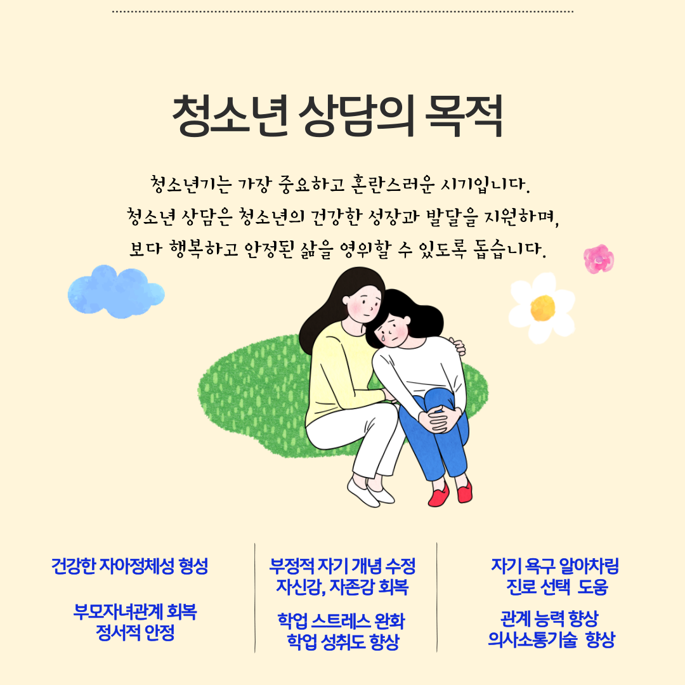
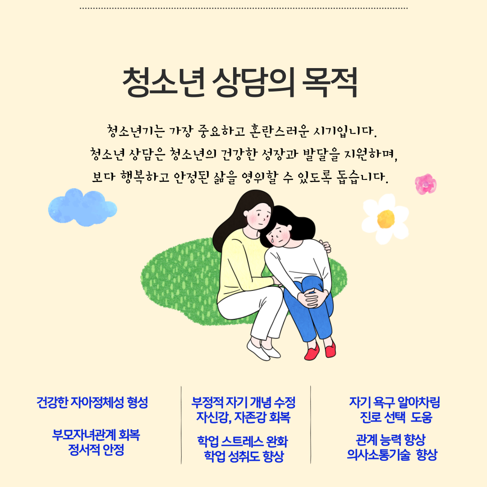
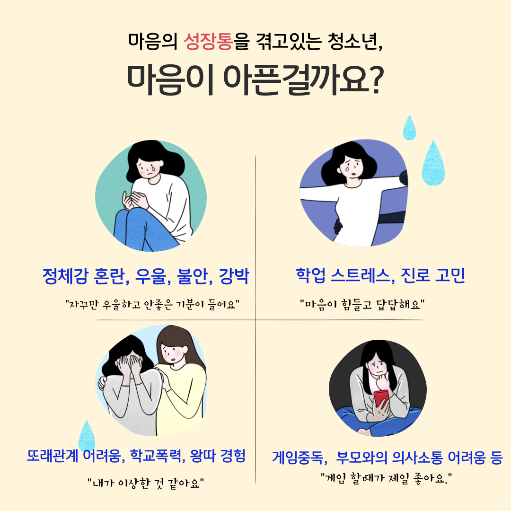
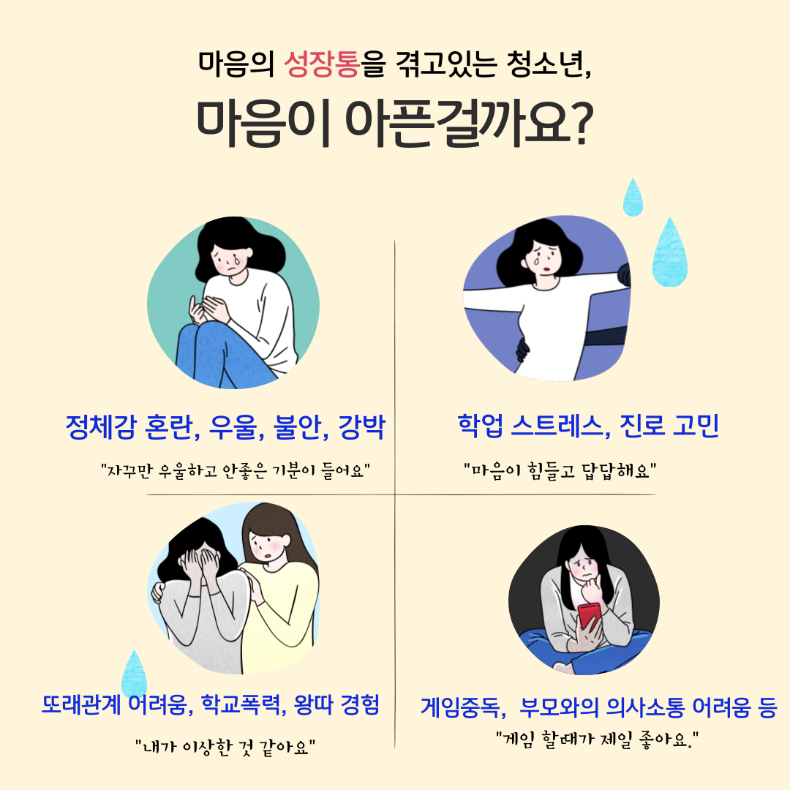
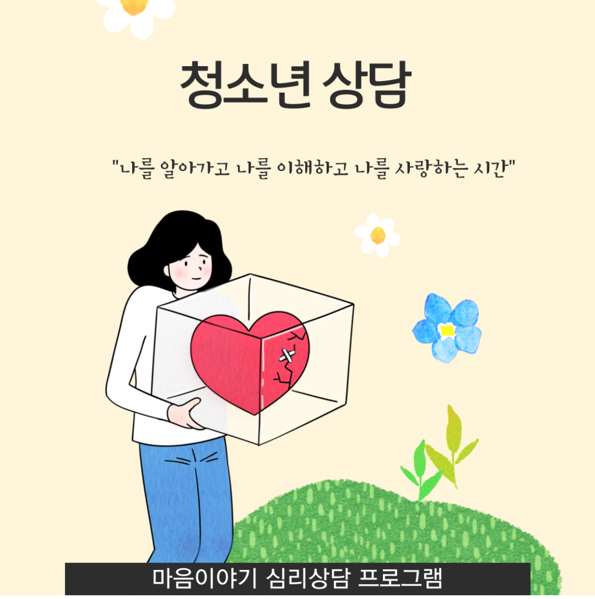
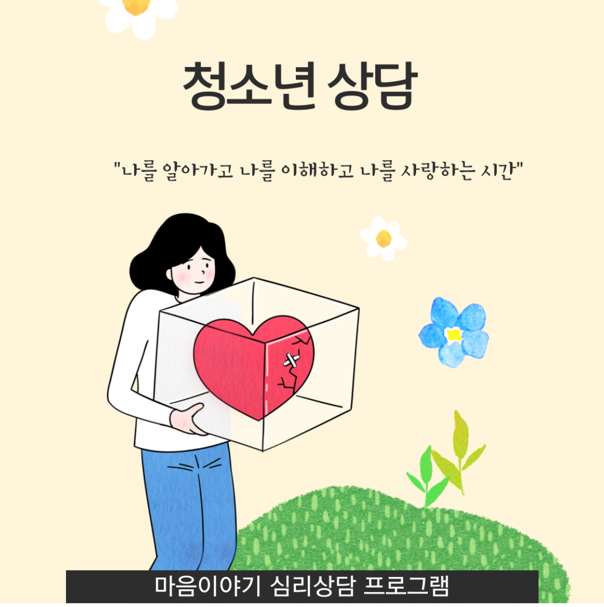

청소년 상담
 
 

 


마음이야기 심리상담센터에서 진행하는 청소년 심리상담 프로그램을 소개해볼께요.
서영이는 초등학교 때까지 부모님 걱정을 끼지는 일이 없을 정도로 공부도 잘하고 학교생활도 잘하는 아이였습니다. 그런데 중학교에 들어오면서 말수가 줄어들고 아침만 되면 머리가 아프다면서 지각하는 일이 잦아졌습니다. 이때부터 짜증이 많아지고 집중을 못하고 멍하니 책상 위에 앉아 있곤 했습니다.
"모든 게 힘들어요, 미쳐버릴 것 같아요. 난 우리 반에서 제일 미련하고 못생기고 쓸모 없는 인간인 것 같아요. 뭘 해도 재미없고 게임 할 때만 힘든 기분을 느끼지 않아요."
최근들어 서영이와 같은 증상을 지닌 자녀 문제로 상담센터를 찾는 청소년과 부모님들이 많아지고 있습니다.

소위 청소년기는 질풍노도의 시기라고 하지요.
청소년기는 2차 성징과 함께 신체적 변화가 급격하게 일어나고 그만큼 정서적으로 불안정하기 쉽습니다.
자신의 외모에 신경을 많이 쓰기도 하고, 다른 사람들의 시선을 크게 의식하거나, 사람들이 나를 바라보고 있다고 상상하기도 합니다.
또래 친구 관계가 중요하고 그 안에서 소속감과 안정감을 느끼기를 원합니다. 이는 청소년 시기에 자아정체감을 형성하는데 긍정적이든 부정적이든 중요한 역할을 하죠.
이처럼 청소년기는 성인기로 나아가는데 있어서 중요한 변화와 발달 과제를 지니고 있습니다.
청소년 시기에 어떤 심리적 어려움들이 있을 수 있을까요?
1. 자아정체성 혼란과 자존감 저하
청소년기에는 긍정적인 자기개념을 바탕으로, 자아정체성을 건강하게 형성하는 것이 무엇보다 중요합니다.
자신을 긍정적으로 받아들이지 못하거나, 자신의 능력이나 외모에 대한 부정적 인식은 자존감 저하와 자기의심으로 이어질 수 있습니다. '자신이 누구인지',' 무엇을 원하는지 잘 모르겠다'며 혼란스러워하기도 합니다.
이러한 낮은 자존감은 사회적 불안, 우울증, 대인관계로 발전할 수 있습니다.
2. 불안과 스트레스
한국의 청소년들은 특히 대학 입시에 대한 압박감과 성적에 대한 과도한 스트레스를 겪고 있다고 해도 과언이 아닐 것입니다.
비단 학업에 대한 문제 뿐만 아니라 또래 친구 관계, 미래와 진로에 대한 걱정 등 다양한 이유로 불안과 스트레스를 겪을 수 있습니다.
스트레스가 과도해지면 불안장애로 발전할 수 있스며, 신체화 증상(두통, 소화불량 등)으로 나타날 수 있습니다.
3. 대인관계 갈등으로 인한 정서적 불안 및 문제 초래
청소년기에 있어서 또래 관계는 자아 존중감과 자아정체감을 형성하는데 있어서 매우 중요한 역할을 하게 됩니다.
청소년들은 친구들과 함께할 수 있는 활동에 참여하길 원합니다. 또래집단을 형성하여 자신들의 가치관을 공유하고 생각과 행동을 공유하며 그 속에서 안정감을 느낍니다.
그런데 만약 또래 집단에서 소외되거나 따돌림, 인격적인 무시 등을 경험하게 되면, 자아가 성숙하지 못한 청소년들이 받는 상처는 성인이 생각하는 이상이 될 수 있습니다.
자신을 둘러싼 모든 세상이 무너지는 듯한 느낌을 받을 수 있습니다. 심한 경우는 입을 닫아버리고 먹지도 않으며 자신을 잃어버리는 아이들도 있습니다.
4. 부적응적 문제 행동
현대 청소년들은 디지털 기기에 많은 시간을 보내고, 소셜 미디어나 온라인 게임에 중독되는 경우가 많습니다.
지나치게 많은 시간을 온라인에서 보내면 현실 세계에서의 관계나 학업에 부정적인 영향을 주기도 합니다.
또한 청소년들은 정서적으로 불안이 올라올 때, 이를 충동적이거나 위험한 행동으로 표출하기도 합니다.
예를 들어, 약물 남용, 폭력, 학교 부적응, 불법 행위 등이 나타날 수 있습니다. 이러한 문제 행동은 자신의 감정을 적절히 표현하지 못하거나, 스트레스를 적절하게 해소하는 방법을 배우지 못해서 생기는 경우가 많습니다.
5. 우울증과 자살 충동
우리 나라 청소년들의 우울증 발생 비율은 성인보다 높은 편이라고 합니다.
청소년 시기의 우울증은 슬프고 우울하다고 직접적으로 표현하는 모습 대신 짜증이 많아지고 충동적인 성향을 보일 때가 많습니다.
우울증을 겪는 청소년은 무기력함, 흥미 상실, 수면 장애, 식욕 부진 등의 증상을 보이며, 심한 경우 자살 충동까지 느낄 수 있습니다.

이처럼 청소년기는 다양한 마음의 성장통을 겪을 수 있으며, 이를 건강하게 극복하지 못하면 나아가서 성인기까지 부정적인 영향을 미칠 수 있습니다.
그러므로 이러한 문제들에 대한 적절한 심리적 지원을 받는 것이 매우 중요합니다.
청소년기는 인생의 주기에 있어서 가장 중요하고 혼란스러운 시기입니다.
마음이야기 심리상담센터에서는 마음의 성장통을 겪는 청소년들에게 적절한 심리상담과 치료적 개입을 진행하고 있습니다.
이를 통해 보다 건강하고 적응적인 삶을 살아갈 수 있도록 돕고자 합니다.
그렇다면 마음이야기 청소년 상담을 통해서 어떤 도움을 받을 수 있을까요
저의 지나온 청소년기를 떠올려봐도, 청소년들은 부모님의 말씀 보다는 또래 친구들, 그리고 주변 어른들의 조언에 더 큰 영향을 받는 것 같습니다.
청소년기는 부모의 품을 떠나서 자기만의 세계관을 만들어나가고, 정체성을 형성해나가는 시기이기 때문에 어쩌면 이러한 현상은 당연한 과정이 아닐까 하는 생각이 들기도 합니다.
혹시 청소년기 마음의 성장통이 심해서 고통을 겪고 있는 자녀들을 두신 부모님이 계시다면, 한가지 조언을 드리고 싶은 부분이 있습니다.
자녀들의 문제를 직접 해결해 주려고 하다보면, 오히려 더 키울 수 있다는 점입니다.
문제를 객관적으로 바라보기 힘든 부분도 있고, 심리적으로 거리를 두는 것이 오히려 자녀에게 도움이 될 때도 있기 때문에 그렇습니다.
그러므로 부모님이 직접 해결해주려고 하시기 보다는, 보다 객관적이고 전문적인 도움과 멘토링을 받아볼 수 있는 것이 좋습니다.
그 과정에서 마음이야기 심리상담센터의 도움이 필요하시다면 언제든지 문의해주세요.
다양한 경험과 전문성으로 마음의 성장통을 겪는 청소년들이 자신의 성장통을 밑거름으로 삼아 잘 성장해나갈 수 있도록 돕겠습니다.
1. 정서적 안정과 스트레스 관리, 문제 행동을 예방하고 해결
"상담 전에는 마음이 많이 불안했는데 점점 나아지고 있어요. 내 마음이 이렇게나 엉망인지 정말 몰랐어요."
청소년 상담은 청소년기에 불안, 스트레스, 우울과 같은 정서적 어려움을 겪을 때 이를 적절히 다루고 관리하는 데 효과적일 수 있습니다.
청소년들은 상담을 통해 자신의 감정을 표현하는 방법을 배우고, 적절한 스트레스 대처 방법을 배우게 됩니다. 이는 불안정한 정서를 조절하고 심리적 안정을 유지하는데 도움을 받을 수 있게 됩니다.
더 나아가 청소년 상담은 반항적 행동, 폭력, 약물 남용 등 문제 행동을 예방하고 해결하는 데 중요한 역할을 합니다.
상담을 통해 청소년들은 자기 자신의 문제 패턴을 인식하게 되고, 이러한 행동이 발생하는 원인을 이해함으로써 진정한 자기 자신을 만나고 이해하는 과정을 갖게 됩니다.
또한 나쁜 습관과 위험 행동을 건강한 방식으로 대체하는 방법을 배움으로써 문제 행동을 예방, 해결하는데 도움을 줄 수 있습니다.
2. 자아정체성 확립, 긍정적인 자기 이해와 성장 촉진
청소년들은 자아정체성을 확립하는 과정에서 혼란을 겪을 수 있습니다.
상담은 청소년이 자신을 더 잘 이해하고, 자신의 가치와 목표를 명확하게 설정하는 데 도움을 줍니다.
자기 자신을 이해하는 과정을 통해, 자신의 장점과 약점을 발견하고 수용할 수 있게 됩니다. 이는 자존감을 높이고 긍정적인 자기 개념을 형성하며, 자기정체성을 확립하는데 도움을 받을 수 있습니다.
이처럼 상담은 청소년들이 자신의 생각과 감정, 행동 패턴을 더 깊이 이해하게 하며, 이를 통해 성숙한 인격 형성에 기여합니다.
자기 인식이 높아지면 자신의 강점과 약점을 더 잘 알게 되고, 이를 바탕으로 자신의 삶을 더 나은 방향으로 이끌 수 있습니다.
이는 청소년의 전반적인 성장과 발달에 긍정적인 영향을 미칩니다.
3. 대인관계 기술 향상
청소년 상담은 관계 갈등을 겪을 때 효과적입니다.
상담 과정에서 상담자와의 온전한 지지와 신뢰 경험은 청소년들에게 자기 자신과 타인과의 관계 경험에도 긍정적인 영향을 미칠 수 있습니다.
상담과정에서 이루어지는 지속적인 대화를 통해 건강한 의사소통 기술과 갈등 해결 방법을 배울 수 있게 되고, 이는 건강한 대인관계를 형성하고 유지하는 데 필요한 사회적 기술을 습득하는데 도움이 됩니다.
4. 정신건강 문제 조기 발견 및 치료
청소년 상담은 우울증, 불안장애, ADHD 등 정신건강 문제를 조기에 발견하고, 적절한 개입과 치료를 받을 수 있도록 돕습니다.
상담을 통해 심리적 어려움이 장기화되기 전에 문제를 인식하고 대처하는 방법을 배우면, 성인기에도 건강한 심리 상태를 유지할 수 있는 기반을 마련할 수 있습니다.
5. 자살 예방 및 심리적 위기 대처
심리적으로 위기에 처한 청소년들에게 상담은 자살 예방에 중요한 역할을 합니다.
상담사는 청소년이 겪는 심리적 고통을 경청하고, 자살 충동이나 자기 파괴적인 생각을 가진 경우 적절한 개입을 통해 이를 예방할 수 있습니다.